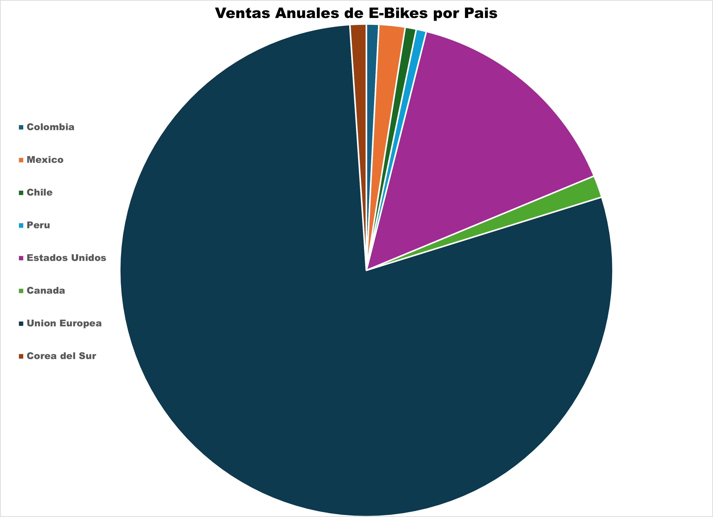

Características: Alto poder adquisitivo, incentivos estatales, clima urbano propicio para
e-mobility.
Comentario: Mercado ideal para propuestas con alto valor ambiental.
2.7 Unión Europea
Tipo de mercado: Segmentado
Clientes objetivo: Usuarios B2C ecológicos y empresas de logística verde.
Características: Fuerte infraestructura ciclista, regulaciones exigentes, alto nivel
técnico.
Comentario: Requiere ajuste a normas CE (p.ej., certificación UL 2271) para competir.
2.8 Corea del Sur
Tipo de mercado: Nicho de mercado
Clientes objetivo: Early adopters, profesionales tecnológicos, ciclistas urbanos
exigentes.
Características: Alto ingreso per cápita, mercado competitivo, gran valoración del diseño
y la conectividad.
Comentario: Ideal para modelos de gama alta con app integrada y componentes de precisión.
3. Graficos de la distribución de ventas por pais de interes

Propuestas de valor
Propuesta de Valor
The Rolling Volts combina ingeniería de producto, automatización industrial y ventajas
arancelarias para ofrecer una solución “llave en mano” de movilidad eléctrica que maximiza el valor para
clientes B2C y B2B en Latinoamérica.
Fabricación automatizada y modular en Colombia
Diseñamos e integramos una línea de ensamble robotizada capaz de producir en masa los tres modelos de
e-bike (City Rear-Hub, Mid-Hub y Cargo Mid-Hub) con ciclos de 1 min por unidad,
asegurando costos directos aproximados de US $440 y una capacidad inicial de 124 800
unidades al año.
Servicio “Factory-as-a-Service”
Además del plan de automatización, ejecutamos la puesta en marcha, operamos y administramos la planta
durante su fase de ramp-up. Así, el cliente accede a mantenimiento predictivo, mejora continua
y capacitación de personal local, reduciendo el riesgo operativo y logrando un OEE alto.
Ventaja de near-shoring y aranceles bajos comparativamente a otros paises
Al ensamblar en Colombia —sin competidores locales y con arancel 0 % para exportaciones CAN y
bajos aranceles hacia EE. UU.— ofrecemos tiempos de entrega de 30 días (vs.
≥ 90 días para importaciones asiáticas) y protegemos márgenes frente a la guerra arancelaria
estadounidense.
Valor percibido para el usuario final
Movilidad eléctrica accesible, funcional y conectada, diseñada y ensamblada en Latinoamérica.
Experiencia posventa de cercanía: red de service hubs
Canales
Canales directos
Equipo comercial
Información: visitas a ferias industriales, webinars sectoriales y prospección
personalizada vía LinkedIn.
Evaluación: demostraciones virtuales de la línea de automatización, tours guiados a la
planta piloto y estudios de ROI a medida.
Compra: negociación de contratos marco mediante CRM y firma electrónica con respaldo legal.
Entrega: gestión de proyecto llave en mano con cronograma compartido en el portal del
cliente.
Posventa: gerente de cuenta dedicado, soporte 24/7 y revisiones trimestrales de
desempeño OEE.
Ventas por internet (e-commerce B2B)
Información: SEO, blog técnico, campañas de anuncios segmentados y white papers
descargables.
Evaluación: SCADA y simulaciones 3D de la fábrica y chat en vivo con un
ingeniero.
Entrega: seguimiento de hitos en un dashboard con alertas automáticas de avance.
Posventa: portal de tickets, base de conocimientos y planes de mantenimiento contratables.
Canales indirectos
Tiendas de socios
Evaluación: sesiones conjuntas (equipo técnico + dealer) y testimonios de casos de
éxito locales.
Compra: el dealer registra la orden en el CRM central y recibe comisión sobre la venta.
Entrega: coordinación logística fábrica → dealer → cliente final y capacitación in
situ.
Posventa: servicio de mantenimiento certificado en la tienda socia con inventario de
repuestos críticos y SLA acordados.
Relaciones con clientes
Fundamento de la relación
La estrategia de The Rolling Volts combina
captación (visitas a ferias, webinars y prospección digital),
fidelización (gerente de cuenta dedicado y soporte 24/7) y
estimulación de ventas (venta sugerida de módulos de
mantenimiento predictivo y analítica OEE).
Categorías de relación
Asistencia personal
Ingenieros comerciales acompañan la evaluación y negociación con demostraciones,
tours guiados y estudios de ROI a medida.
Asistencia personal exclusiva
Cada cliente dispone de un gerente de cuenta dedicado, con soporte 24/7 y
revisiones trimestrales de desempeño OEE.
Servicios automáticos
La interfaz SCADA con alertas automáticas informan en tiempo real sobre hitos del
proyecto.
Fuentes de ingreso
Mecanismos de fijación de precios
Precio fijo negociado por proyecto llave en mano: el valor se pacta según el alcance de la
línea de automatización, capacidad instalada y nivel de personalización requerida.
Cuota recurrente por suscripción: tarifa mensual que cubre operación integral,
mantenimiento predictivo y analítica OEE de la planta.
Cuota variable por uso: cargos por hora de operación o por unidad producida para servicios
opcionales (soporte remoto 24/7, actualizaciones de software y kits de expansión).
Fuentes de ingresos
Pagos de clientes: facturación única por la entrega del proyecto de automatización “llave
en mano”.
Pagos recurrentes: ingresos mensuales o anuales derivados de la administración continua de
la planta y de servicios adicionales escalables.
Formas de generar los ingresos
Venta de activos: transferencia definitiva de la línea de ensamble robotizada y modular que
The Rolling Volts diseña e integra para el cliente.
Cuota por suscripción (Factory-as-a-Service): acceso ininterrumpido a la operación y mejora
continua de la planta, incluyendo mantenimiento predictivo y capacitación
Concesión de licencias (opcional): derecho a replicar la ingeniería de la línea en otras
instalaciones del mismo grupo empresarial.
Recursos clave
Recursos clave
Físicos
Planta piloto de 3200 m² diseñada para una línea de ensamble robotizada capaz de producir una bici por
minuto (capacidad inicial ≈ 124 800 u/año).
Equipos Industriales.
Infraestructura TIC industrial: servidores SCADA, red IIoT y sistema de backup en la nube para
“Factory-as-a-Service”
Intelectuales
Ingeniería propietaria de la línea de ensamble robotizada y gemelo digital 3D utilizado en preventa y
operaciones remotas.
Base de datos con historiales de ciclo de vida y trazabilidad de componentes.
Marca registrada “The Rolling Volts”
Biblioteca de algoritmos de mantenimiento predictivo y analítica OEE integrada al servicio posventa.
Humanos
Equipo fundador.
Operadores y técnicos de mantenimiento locales formados dentro del modelo “Factory-as-a-Service”.
Económicos
Fondos semilla y convocatorias de innovación tecnológica como fuente inicial de capital.
Líneas de crédito industriales (p. ej., Bancóldex) respaldadas por contratos llave en mano y prerreservas
de clientes.
Ingresos recurrentes por suscripción “Factory-as-a-Service” que financian operación y mejoras continuas.
Potencial acceso a incentivos fiscales por fabricación local y exportación CAN .
Actividades clave
Producción
Diseño y simulación de la línea automatizada (“digital twin”) para validar ciclos de 1
min por unidad y asegurar calidad desde la ingeniería.
Integración robótica y puesta en marcha de celdas de ensamble, sistemas de transporte y
estaciones de prueba end-of-line.
Control de calidad y cumplimiento normativo antes de la expedición a clientes o
distribuidores.
Resolución de problemas
Mejora continua y optimización de OEE mediante metodologías Lean / Six Sigma y análisis
de cuellos de botella.
Mantenimiento predictivo basado en datos IIoT para maximizar disponibilidad de la planta
y reducir paradas no planificadas.
Capacitación y soporte 24 / 7 a operarios y equipos locales del cliente, incluyendo
planes de actualización de procesos.
Plataforma-Red
Desarrollo y mantenimiento del portal SCADA / IIoT que monitoriza en tiempo real KPI de
producción y energía.
Gestión de datos en la nube (dashboards, analítica) para clientes y partners, habilitando
servicios “Factory-as-a-Service”.
Creaciüon y mantemiento de la pagina web
Asociaciones clave
Tipos de alianzas
1. Alianzas estratégicas entre empresas no competidoras
Integradores de robótica y automatización (ABB, FANUC, Rockwell Automation) para suministrar robots,
PLC y servicios de puesta en marcha.
Operadores 3PL dedicados para la logística D2C y la entrega de “kits” de prerreserva en 48-72 h, liberando
a TRV de la gestión de última milla.
Universidades y centros de I+D colombianos que validan baterías y forman talento especializado en
mecatrónica y análisis de datos.
2. Cooperación con competidores
Acuerdos OEM white-label que permiten fabricar lotes para marcas nicho y elevar la ocupación de
planta.
3. Empresas conjuntas (joint venture)
Alianza Fintech-JV que ofrezca crédito instantáneo (< US$35/mes) a compradores B2C y flotas de
reparto, reduciendo la barrera económica.
4. Relación cliente-proveedor
Contratos de off-take plurianuales con fabricantes de celdas LFP 21700 para asegurar la mayoria
del BOM y estabilidad de precios.
Acuerdos marco con proveedores regionales de motores hub, cuadros de aluminio y frenos hidráulicos para
garantizar lead-times.
Programas SLA con la red de service hubs para disponer de repuestos críticos y mantener la
promesa posventa.
Motivaciones para asociarse
Optimización y economías de escala: externalizar logística y la compra de componentes
clave reduce CAPEX y acelera el ramp-up de la planta.
Reducción de riesgos e incertidumbre: contratos de off-take aseguran suministro
crítico y diversifican ingresos.
Acceso a recursos y actividades específicas: OEMs aportan tecnología, fintechs financian
al cliente y universidades proveen I+D y capital humano.
Estructura de costos
Tipo de estructura de costos
Orientada al valor (value-driven): se prioriza la creación de valor para el
cliente mediante ingeniería avanzada, operación “Factory-as-a-Service” y tiempos de entrega reducidos. El
sobre-costo
de servicios premium se justifica por mayores márgenes y fidelización.
Orientada a costos (cost-driven): se persigue la optimización continua del
coste unitario a través de economías de escala, automatización (ciclo 1 min/u) y
near-shoring en Colombia.
Costos fijos
Salarios de ingeniería, operación de planta y gerencia.
Amortización de robots, celdas de ensamblaje y equipos MES/SCADA.
Licencias de software de simulación, CAD/CAM y analítica OEE.
Alquiler, seguros e impuestos de la nave industrial.